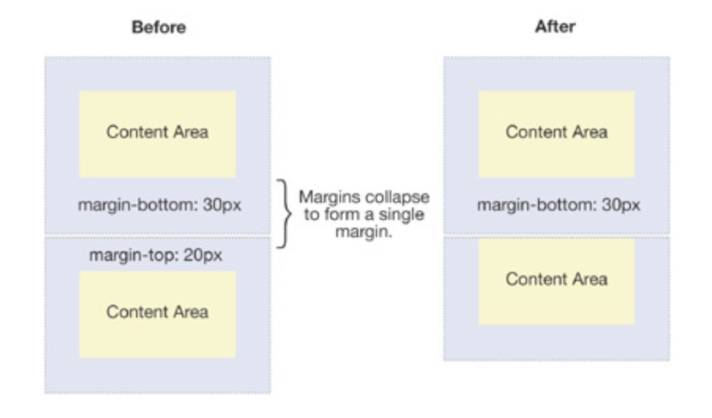

The margin property controls the space outside an element, and the padding property controls the space inside an element.
Margin is the space around an element’s. Padding is the space between an element’s border and the element’s content.Here is some text with no margin or padding. It seems trapped and "has no place to breathe"
See the Pen Untitled by Martin (@martinvillar) on CodePen.
When you add margins, the element is seperated from the rest. There is some extra space and we can see how it is its own independent section of the website. Margins are used to create space around elements, outside of any defined borders.
You can add this through css with "margin: 10px:"
See the Pen Untitled by Martin (@martinvillar) on CodePen.
Padding properties are used to generate space around an element's content, inside of any defined borders. You can also add this by simply adding "padding: 10px" to your css styles.
See the Pen Untitled by Martin (@martinvillar) on CodePen.
Sometimes, margins will collapse. This happens on block level elements such as h2 or div. It happens in flow layouts. It only occurs vertically. If you have a bottom margin of 20px and a top margin of 25px, you will not have a margin of 45px, you will end with a 25px margin. The greatest absolute value wins. Margin collapsing also happens when an element is nested inside another element.
Margin collapsing can be prevented by applying a padding to either element.
